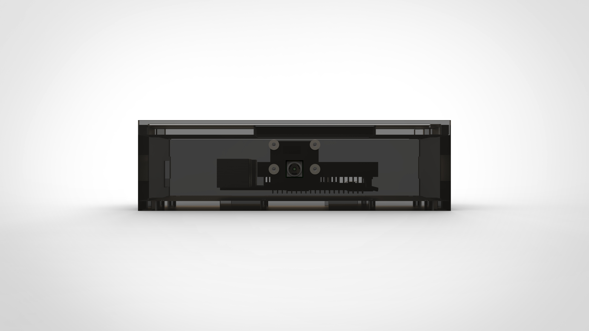
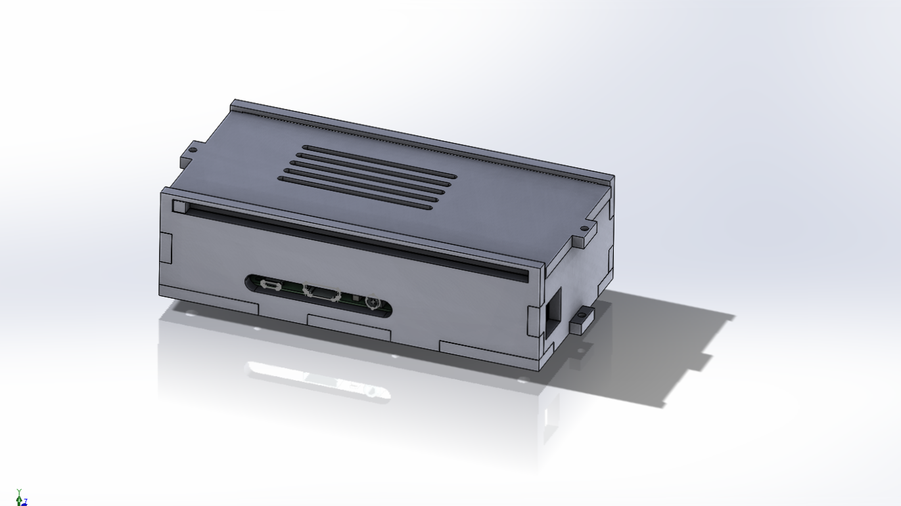
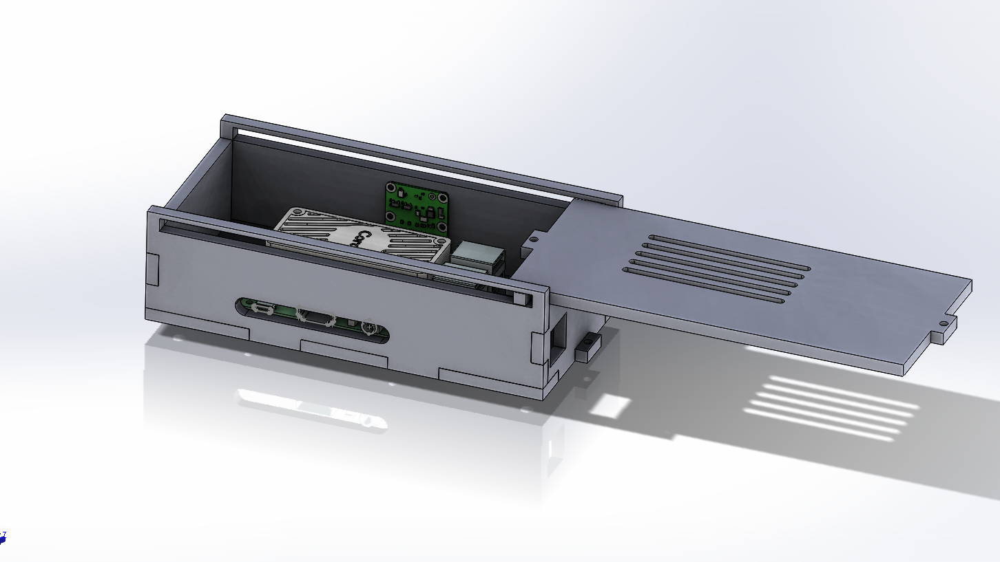
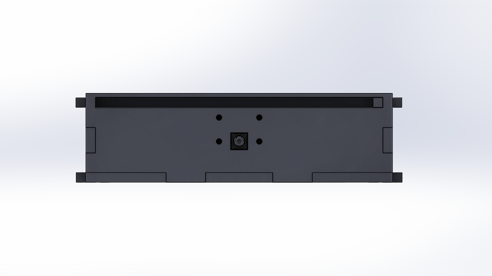
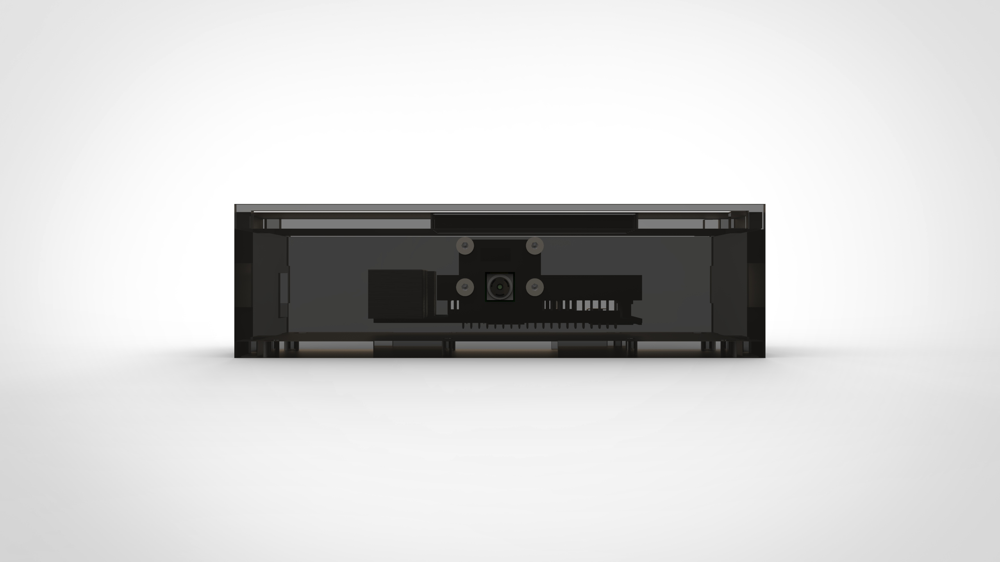
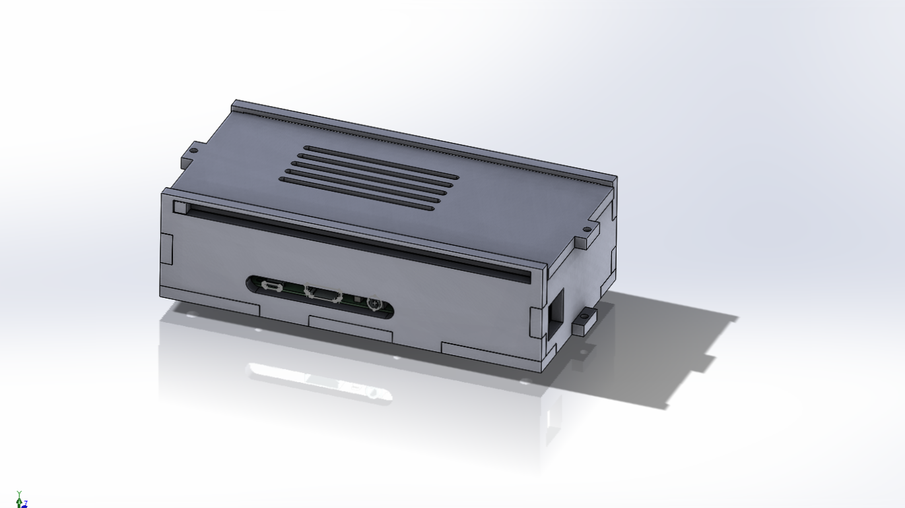
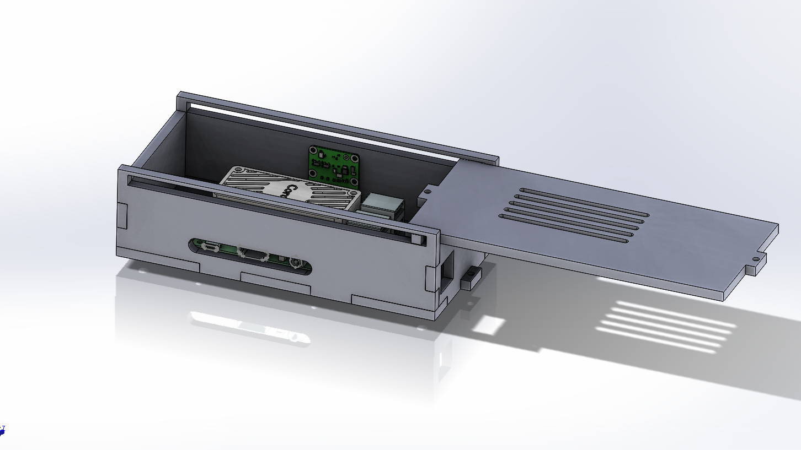
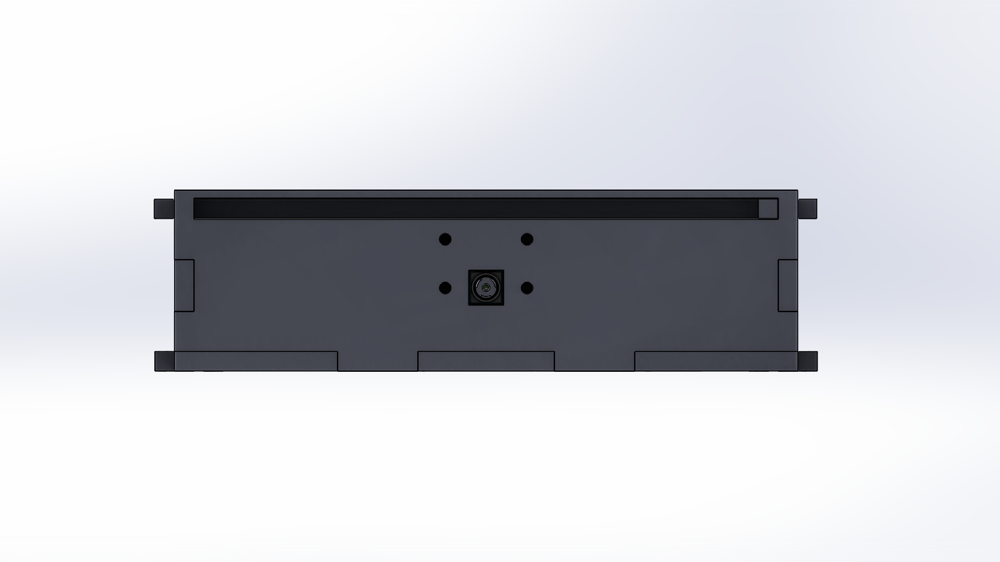

Problem
Managing students count inside classrooms is a tedious process. Installing biometric systems are insecure that the students may accidentally or intentionally damage it. So a device which will not be in direct contact with the students but continuously monitors the count has to be developed.
User
The primary users are schools, colleges and universities.
My Role
The device is AI-based consisting of a processor and a USB Accelerator, which uses a camera to detect and recognize faces inside the classroom to maintain attendance records. My role was to design the casing for the device which is manufacturable at very low cost, but rapidly. The device will be fixed with TV and it should be secure that students shouldn’t be able to access the device easily.
Design Process
The design process started with the pitching of various ideas to the client to clearly understand the requirement. After more than 10 iterations on the sketch, came up with a design. Also to make it rapid manufacturable and low cost we underwent various discussions based on the manufacturing process and frozen with acrylic as the material and laser cutting as the manufacturing process. The main challenges were with ports in the processor; the only ethernet, HDMI and power ports should be accessible. The design was made simpler and easily manufacturable. Snap fits were avoided to make sure that students do not access the device and break it.